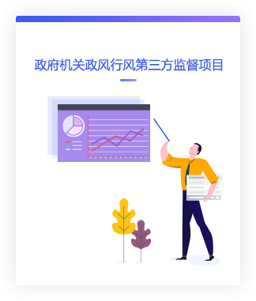
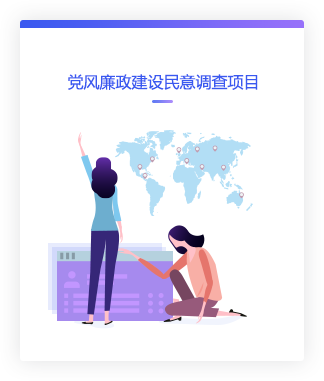
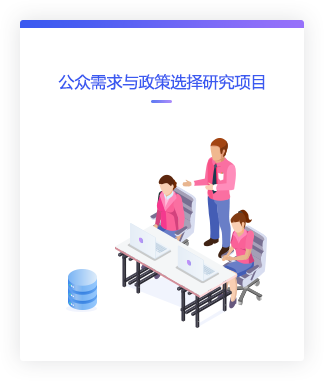
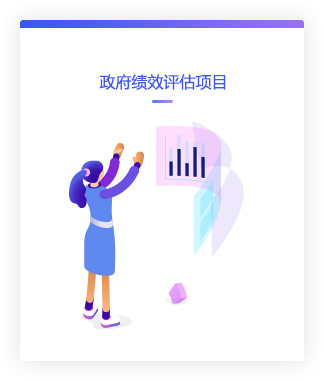
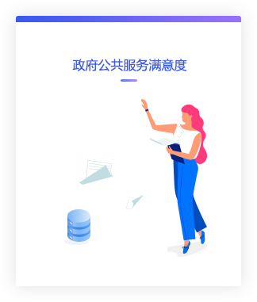

This is a verification mirror for academic publication purposes. Original platform: https://teqd.zkey.cc/
首页
平台产品
数据采集
通用网络问卷平台
互联网大数据采集平台
数据管理
科研数据管理平台（机构版）
科研数据管理平台（项目版）
数据检索
数据可视化
报告自动化
其他产品
高校学生创新创业服务平台 [案例]
基础教育质量检测服务平台 [案例]
科研机构科研成果管理系统 [案例]
非公党建信息管理系统 [案例]
辖区人口信息管理系统 [案例]
解决方案
教育机构
政府部门
科研单位
成功案例
平台部署
调查项目
咨询服务
数据联盟
新闻资讯
关于我们
易研简介
成长历程
资质荣誉
加入我们
听
民意
解
民生
关注公共事务领域的理论和管理实践问题，为改进政府服务、保障民生政策的科学决策提供智力支持。
第三方测评是指政府部门邀请第三方对现行的方针政策、政府服务形象和行政效能、工作人员的工作作风、服务态度、工作效率等进行测评，了解社会大众、单位团体、事件当事人等对上述内容的观点、意见和建议，帮助政府了解民情民意，不断完善政府行政服务体系，提升政府公共服务能力和服务形象。第三方测评是独立的、专业的、客观的评判。
行业背景
作为独立的第三方咨询机构，中科易研立足于“听民声, 解民意”，关注公共事务领域的理论和管理实践问题，广泛搜集民意、贴近公众需求、提升政府服务，接受政府部门、事业单位、社团组织等多个公共事务相关方的委托，为改进政府服务、保障民生政策的科学决策提供智力支持。
服务内容
易研政策研究院致力于广泛搜集民意、贴近公众需求、提升政府服务质量，接受政府部门、事业单位、社团组织等多方委托，提供科学有力的社会调查报告和政策咨询报告，以及培训研讨会等多维度的服务。
    
服务流程
评估手段
服务对象调查、现场暗访检测、电话暗访检测、网站建设评估、单位自评、专项检查
评估应用
扣分依据、成绩排名、问题诊断、改进建议
评估成果
视频、音频、研究报告、持续追踪
科学的框架结构、多元的调查对象、客观的数据统计、严谨的计分方案
成功案例
北京市朝阳区人民政府安贞街道办事处
北京市朝阳区人民政府麦子店街道办事处
北京市朝阳区人民政府朝外街道办事处
北京市朝阳区朝外街道办事处
北京市朝阳区孙河地区办事处
北京市朝阳区八里庄街道办事处
全国老龄工作委员会办公室
国家统计局
九三学社中央委员会办公厅
国务院发展研究中心
国家卫生和计划生育委员会
国家知识产权局
国家质检总局
中共中央组织部干部教育局
中央国家机关团工委
共青团中央
农工党中央
共和国日记编委会
北京市统计局
北京市残疾人联合会
北京妇女联合会
北京市科学技术委员会人才交流中心
北京市朝阳区纪律检查委员会
北京市朝阳区统计局
北京市朝阳区保密局
北京市朝阳区环境保护局
北京市朝阳区工委
北京市朝阳区非公经济工作委员会
北京市朝阳区社工委
北京市朝阳区社会建设工作办公室
北京市西城区党校
北京市丰台区民政局
北京市丰台区环境保护局
北京市通州区水务局
中共河南省委组织部干部教育处
中共四川省委组织部干部教育处
语言
简体中文
新闻与公告
新闻与公告
快速链接
中国社科院社会质量基础数据库
全国人口数据综合集成应用平台
北京大学江山教育大数据平台
全国医学教育发展中心信息与数据平台
联系方式：010-5603-6481
地址：北京市朝阳区广渠路66号院8号楼百环青创大厦三层303室 中科易研（北京）科技有限公司
京ICP备15051429号-1